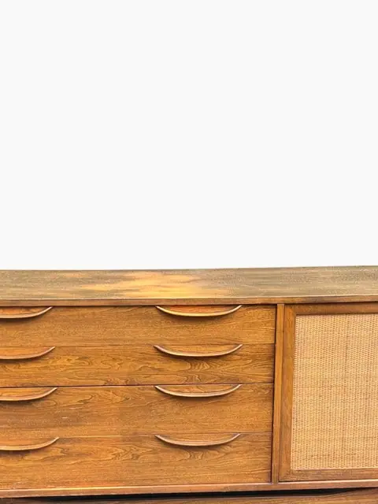
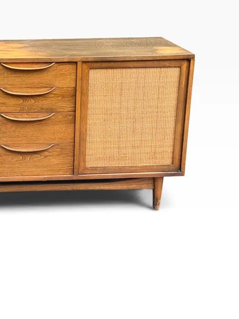
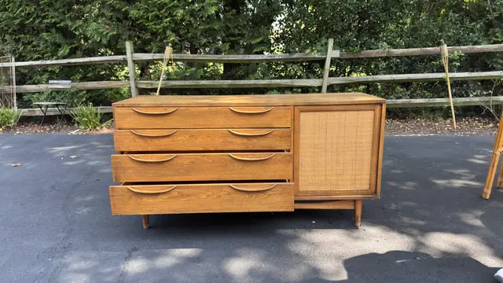
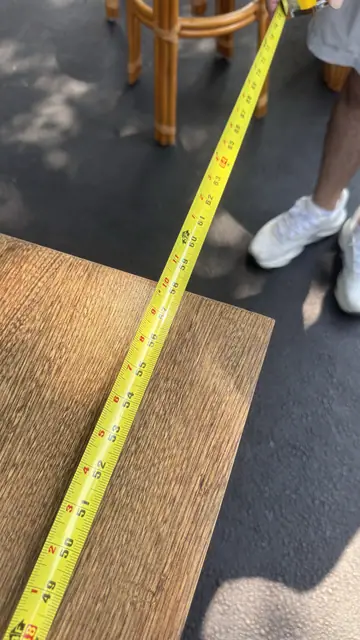
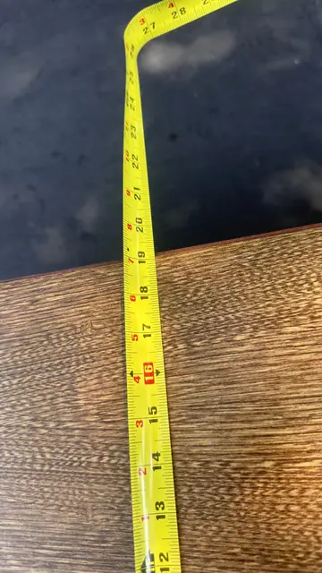
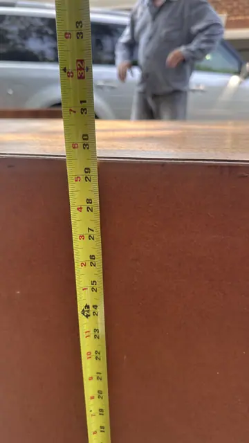
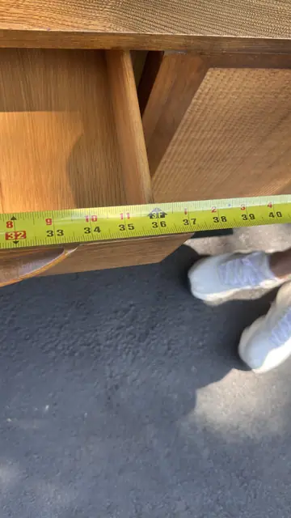
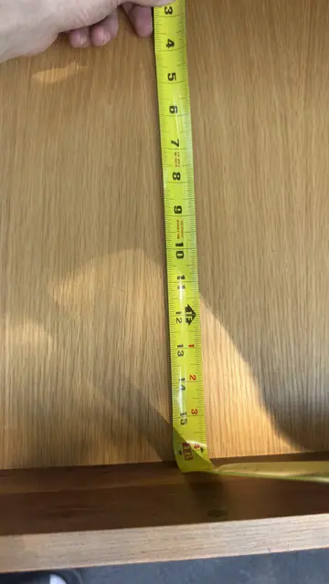
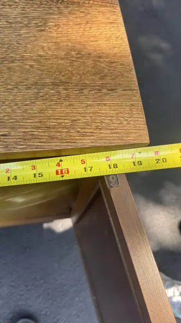
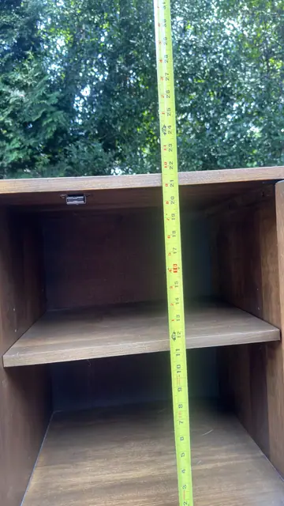

Handmade Objects
Mid-Century Walnut Sideboard with Cane-Front Cabinet
Attributed to Lawrence Peabody for Richardson Bros. Co., Inc. · 20th century
Price Upon Request











About the Item
A 1960s American walnut sideboard with four sculpted-handle drawers and a woven-cane-front cabinet door, raised on tapered legs. The hardware and construction match the Peabody Collection pieces by Lawrence Peabody for Richardson Bros. found in the same group, and it is attributed to that collection. Warm walnut grain throughout. Measurement photos show interior dimensions only. Note: Label photo for this group was kept in ilan_081 (09_orijinal identical to this item's 03); attribution is by matching hardware, not by a label on this piece.
Details
- Creator:
- Attributed to Lawrence Peabody for Richardson Bros. Co., Inc.
- Creation Year:
- 20th century
- Medium:
- Walnut and woven cane
- Period:
- 20Th
- Condition:
- Offered in the condition shown in the photographs.
- Reference Number:
- VO-352